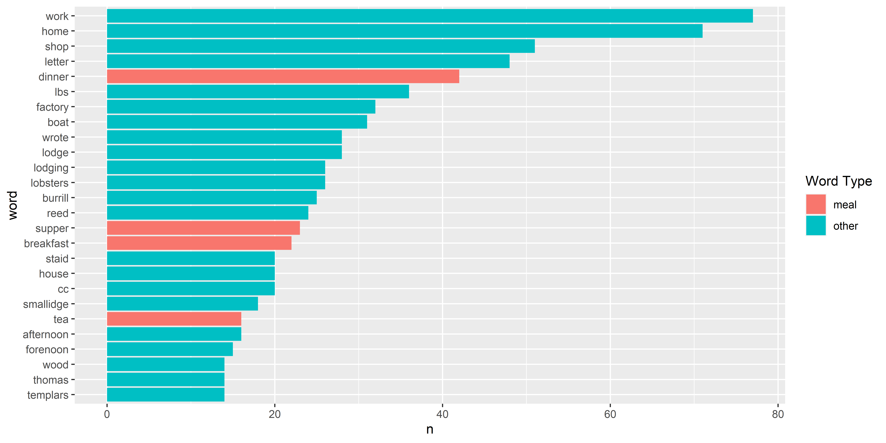
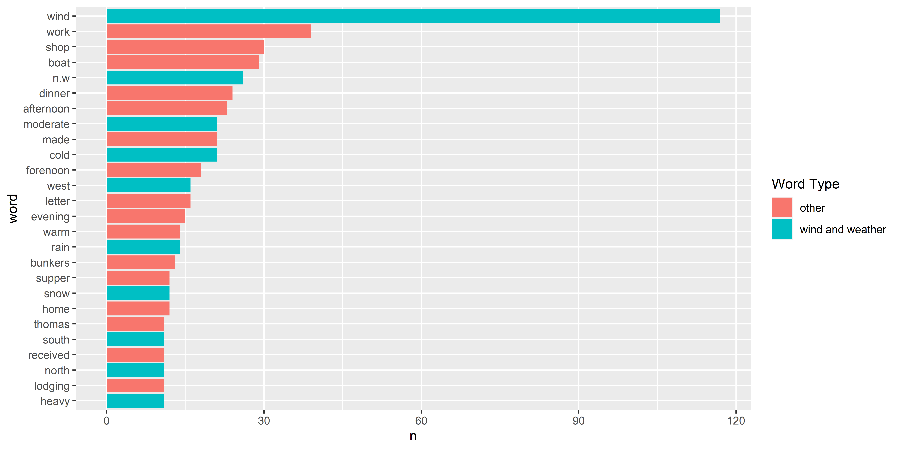

Text Mining
USING TIDY DATA PRINCIPLES
Acknowledgements

Let’s install some packages
What do we mean by tidy text?
text <- c("Tell all the truth but tell it slant —",
"Success in Circuit lies",
"Too bright for our infirm Delight",
"The Truth's superb surprise",
"As Lightning to the Children eased",
"With explanation kind",
"The Truth must dazzle gradually",
"Or every man be blind —")
text
#> [1] "Tell all the truth but tell it slant —"
#> [2] "Success in Circuit lies"
#> [3] "Too bright for our infirm Delight"
#> [4] "The Truth's superb surprise"
#> [5] "As Lightning to the Children eased"
#> [6] "With explanation kind"
#> [7] "The Truth must dazzle gradually"
#> [8] "Or every man be blind —"What do we mean by tidy text?
library(tidyverse)
text_df <- tibble(line = 1:8, text = text)
text_df
#> # A tibble: 8 x 2
#> line text
#> <int> <chr>
#> 1 1 Tell all the truth but tell it slant —
#> 2 2 Success in Circuit lies
#> 3 3 Too bright for our infirm Delight
#> 4 4 The Truth's superb surprise
#> 5 5 As Lightning to the Children eased
#> 6 6 With explanation kind
#> 7 7 The Truth must dazzle gradually
#> 8 8 Or every man be blind —What do we mean by tidy text?
Jane wants to know…
A tidy text dataset typically has
- more
- fewer
rows than the original, non-tidy text dataset.
Gathering more data
You can access the full text of many public domain works from Project Gutenberg using the gutenbergr package.
What book do you want to analyze today? üìñü•≥üìñ
Time to tidy your text!
tidy_book <- full_text %>%
mutate(line = row_number()) %>%
unnest_tokens(word, text)
glimpse(tidy_book)
#> Rows: 127,996
#> Columns: 3
#> $ gutenberg_id <int> 1342, 1342, 1342, 1342, 1342, 1342, 1342, 1342, 1342, 134~
#> $ line <int> 1, 3, 3, 4, 6, 6, 6, 6, 7, 9, 9, 12, 14, 14, 14, 14, 14, ~
#> $ word <chr> "illustration", "george", "allen", "publisher", "156", "c~What are the most common words?
What do you predict will happen if we run the following code? ü§î
What are the most common words?
What do you predict will happen if we run the following code? ü§î
Stop words
Stop words
Stop words
Stop words
What are the most common words?
U N S C R A M B L E
anti_join(get_stopwords(source = “smart”)) %>%
tidy_book %>%
count(word, sort = TRUE) %>%
geom_col() +
slice_max(n, n = 20) %>%
ggplot(aes(n, fct_reorder(word, n))) +
What are the most common words?
The Freeland Bunker Diaries
Currently 2.5 journals transcribed from 1871-1874
library(readxl)
journal_1871_1872 <- read_excel("data/journal_year_1871_1872.xlsx")
journal_1871_1872 %>%
select(date_mdy, month, journal_entry) %>%
head()
#> # A tibble: 6 x 3
#> date_mdy month journal_entry
#> <chr> <chr> <chr>
#> 1 12/23/1871 December Was married at home in evening by William Rand Esqr.
#> 2 12/24/1871 December Went to meeting.
#> 3 12/25/1871 December Shooting match all day in the evening to Christmas tree a~
#> 4 12/26/1871 December About home at work fobbing.
#> 5 12/27/1871 December Work about home reed letter from N. H. Higgins Ins agt.
#> 6 12/28/1871 December Work about home.All Journals
journal_1873 <- read_excel("data/journal_1873.xlsx")
journal_1874 <- read_excel("data/journal_year_1874.xlsx")
journal_1875 <- read_excel("data/journal_1875.xlsx")
# We want to keep track of the journals
journal_1871_1872$journal <- 1
journal_1873$journal <- 2
journal_1874$journal <- 3
journal_1875$journal <- 4
journals <- rbind(journal_1871_1872, journal_1873, journal_1874, journal_1875)Tidy Journals
library(lubridate)
(tidy_journal <- journals %>%
select(date_mdy, month, journal_entry, journal) %>%
mutate(date_mdy = mdy(date_mdy)) %>%
mutate(year = year(date_mdy)) %>%
unnest_tokens(word, journal_entry) %>%
mutate(word = case_when(word %in% c("reed", "read") ~ "received",
TRUE ~ word)))
#> # A tibble: 12,356 x 5
#> date_mdy month journal year word
#> <date> <chr> <dbl> <dbl> <chr>
#> 1 1871-12-23 December 1 1871 was
#> 2 1871-12-23 December 1 1871 married
#> 3 1871-12-23 December 1 1871 at
#> 4 1871-12-23 December 1 1871 home
#> 5 1871-12-23 December 1 1871 in
#> 6 1871-12-23 December 1 1871 evening
#> 7 1871-12-23 December 1 1871 by
#> 8 1871-12-23 December 1 1871 william
#> 9 1871-12-23 December 1 1871 rand
#> 10 1871-12-23 December 1 1871 esqr
#> # ... with 12,346 more rowsMost common words
Removing stop words
Journal 1: Boats, Meals, Goods üç≥ ‚õµü¶û ü™µ
Journal 2: Wind and Weather ☁︎ NESW
Your Turn: What were the most common words in Journal 3 and 4?
SENTIMENT ANALYSIS
üòÑüò¢üò†
Sentiment lexicons
Sentiment lexicons
get_sentiments("bing")
#> # A tibble: 6,786 x 2
#> word sentiment
#> <chr> <chr>
#> 1 2-faces negative
#> 2 abnormal negative
#> 3 abolish negative
#> 4 abominable negative
#> 5 abominably negative
#> 6 abominate negative
#> 7 abomination negative
#> 8 abort negative
#> 9 aborted negative
#> 10 aborts negative
#> # ... with 6,776 more rowsSentiment lexicons
get_sentiments("nrc")
#> # A tibble: 13,872 x 2
#> word sentiment
#> <chr> <chr>
#> 1 abacus trust
#> 2 abandon fear
#> 3 abandon negative
#> 4 abandon sadness
#> 5 abandoned anger
#> 6 abandoned fear
#> 7 abandoned negative
#> 8 abandoned sadness
#> 9 abandonment anger
#> 10 abandonment fear
#> # ... with 13,862 more rowsSentiment lexicons
get_sentiments("loughran")
#> # A tibble: 4,150 x 2
#> word sentiment
#> <chr> <chr>
#> 1 abandon negative
#> 2 abandoned negative
#> 3 abandoning negative
#> 4 abandonment negative
#> 5 abandonments negative
#> 6 abandons negative
#> 7 abdicated negative
#> 8 abdicates negative
#> 9 abdicating negative
#> 10 abdication negative
#> # ... with 4,140 more rowsImplementing sentiment analysis
Jane wants to know…
What kind of join is appropriate for sentiment analysis?
- anti_join()
- full_join()
- outer_join()
- inner_join()
Implementing sentiment analysis
What do you predict will happen if we run the following code? ü§î
Implementing sentiment analysis
What do you predict will happen if we run the following code? ü§î
tidy_book %>%
inner_join(get_sentiments("bing")) %>%
count(sentiment, word, sort = TRUE)
#> # A tibble: 1,503 x 3
#> sentiment word n
#> <chr> <chr> <int>
#> 1 negative miss 315
#> 2 positive well 230
#> 3 positive good 208
#> 4 positive great 148
#> 5 positive enough 111
#> 6 positive love 102
#> 7 positive better 98
#> 8 positive pleasure 94
#> 9 positive like 89
#> 10 positive happy 83
#> # ... with 1,493 more rowsImplementing sentiment analysis
Was Freeland Sentimental?

Implementing sentiment analysis
tidy_journal %>%
inner_join(get_sentiments("bing")) %>%
count(sentiment, word, sort = TRUE)
#> # A tibble: 84 x 3
#> sentiment word n
#> <chr> <chr> <int>
#> 1 positive work 182
#> 2 negative cold 45
#> 3 positive good 36
#> 4 positive calm 33
#> 5 negative staid 30
#> 6 positive warm 29
#> 7 positive breeze 25
#> 8 positive pleasant 24
#> 9 positive ready 17
#> 10 positive worked 17
#> # ... with 74 more rowsImplementing sentiment analysis
What was the weather like?
More insight from bigrams!
(tidy_ngram <- journals %>%
mutate(journal_entry = str_replace_all(journal_entry, "south west", "southwest")) %>%
mutate(journal_entry = str_replace_all(journal_entry, "north west", "northwest")) %>%
mutate(journal_entry = str_replace_all(journal_entry, "south east", "southeast")) %>%
mutate(journal_entry = str_replace_all(journal_entry, "north east", "northeast")) %>%
unnest_tokens(bigram, journal_entry, token = "ngrams", n = 2) %>%
drop_na(bigram) %>%
select(journal, bigram, date_mdy))
#> # A tibble: 11,467 x 3
#> journal bigram date_mdy
#> <dbl> <chr> <chr>
#> 1 1 was married 12/23/1871
#> 2 1 married at 12/23/1871
#> 3 1 at home 12/23/1871
#> 4 1 home in 12/23/1871
#> 5 1 in evening 12/23/1871
#> 6 1 evening by 12/23/1871
#> 7 1 by william 12/23/1871
#> 8 1 william rand 12/23/1871
#> 9 1 rand esqr 12/23/1871
#> 10 1 went to 12/24/1871
#> # ... with 11,457 more rowsN-grams‚Ķ and beyond! üöÄ
tidy_ngram %>%
count(bigram, sort = TRUE)
#> # A tibble: 5,522 x 2
#> bigram n
#> <chr> <int>
#> 1 the wind 501
#> 2 went to 149
#> 3 in shop 110
#> 4 work in 108
#> 5 in the 99
#> 6 wind north 71
#> 7 in forenoon 55
#> 8 wind southerly 54
#> 9 letter to 53
#> 10 wrote letter 53
#> # ... with 5,512 more rowsJane wants to know…
Can we use an anti_join() now to remove stop words?
- Yes! ✅
- No ☹️
N-grams‚Ķ and beyond! üöÄ
So many wind directions‚Ķ! üöÄ
bigram_counts
#> # A tibble: 1,930 x 3
#> word1 word2 n
#> <chr> <chr> <int>
#> 1 wind north 71
#> 2 wind southerly 54
#> 3 wrote letter 53
#> 4 north west 48
#> 5 wind south 47
#> 6 reed letter 36
#> 7 wind n.w 33
#> 8 south west 32
#> 9 wind easterly 32
#> 10 wind northerly 26
#> # ... with 1,920 more rowsLet’s tidy these up
bigram_counts <- tidy_ngram %>%
separate(bigram, c("word1", "word2"), sep = " ") %>%
filter(!word1 %in% stop_words$word,
!word2 %in% stop_words$word) %>%
mutate(word1 = case_when(word1 == "easterly" ~ "east",
word1 == "southerly" ~ "south",
word1 == "n.w" ~ "northwest",
word1 == "northerly" ~ "north",
word1 == "westerly" ~ "west",
TRUE ~ word1)) %>%
mutate(word2 = case_when(word2 == "easterly" ~ "east",
word2 == "southerly" ~ "south",
word2 == "n.w" ~ "northwest",
word2 == "northerly" ~ "north",
word2 == "westerly" ~ "west",
TRUE ~ word2)) %>%
count(word1, word2, sort = TRUE)Removing wind
bigram_counts %>%
filter(word1 != "wind" & word1 != "north" & word1 != "south")
#> # A tibble: 1,826 x 3
#> word1 word2 n
#> <chr> <chr> <int>
#> 1 wrote letter 53
#> 2 reed letter 36
#> 3 lbs lobsters 24
#> 4 cc burrill 20
#> 5 cutting wood 19
#> 6 thomas smallidge 14
#> 7 letter home 12
#> 8 supper lodging 12
#> 9 capt thomas 10
#> 10 dr johnson 10
#> # ... with 1,816 more rowsThanks!
Slides created with Quarto